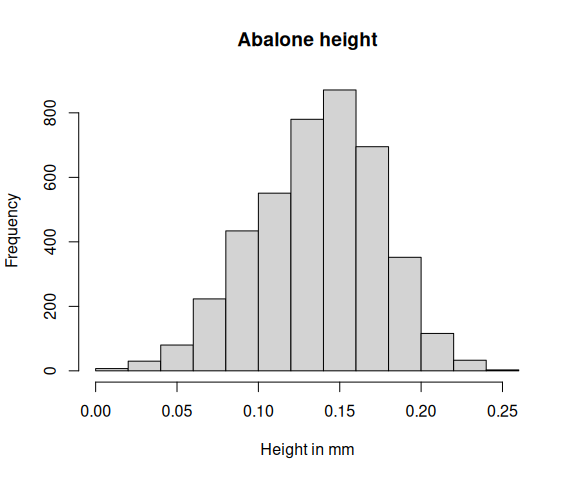

This vignette shows how to model multivariate distributions with copulas
using univariateML and the copula package.
A copula is a function describing the dependency among a set of one-dimensional distributions. If both the marginal distributions and the copula is known, the entire multivariate distribution is known too.
Suppose we look at a multivariate distribution as the pair of a copula and its marginals. Then a natural model selection method is to
- Select the marginal distributions using the AIC.
- Select a copula using the marginal data transformed to the unit interval, again using the AIC.
This two-step procedure is commonly used due to its simplicity. The procedure must be carried out this order since the marginal data cannot be transformed to the unit interval unless we know the marginal distributions.
The univariateML can be used for task 1, while the
copula package can be used to do task 2.
Abalone data
The abalone data set is included in this package. It
consists of \(9\) physical measurements
of \(4177\) sea snails.
library("univariateML")
head(abalone)## sex length diameter height whole_weight shucked_weight viscera_weight
## 1 M 0.455 0.365 0.095 0.5140 0.2245 0.1010
## 2 M 0.350 0.265 0.090 0.2255 0.0995 0.0485
## 3 F 0.530 0.420 0.135 0.6770 0.2565 0.1415
## 4 M 0.440 0.365 0.125 0.5160 0.2155 0.1140
## 5 I 0.330 0.255 0.080 0.2050 0.0895 0.0395
## 6 I 0.425 0.300 0.095 0.3515 0.1410 0.0775
## shell_weight rings
## 1 0.150 15
## 2 0.070 7
## 3 0.210 9
## 4 0.155 10
## 5 0.055 7
## 6 0.120 8Following Ko, Hjort, and Hobæk Haff
(2019) we will take a look at four measurements of the abalones,
namely diameter, height,
shell_weight and age. The variable
age is not present in the abalone data, but is
defined as age = rings + 1.5. Moreover, there are two
outliers in the height data at at \(1.13\) and \(0.52\). We will remove these outliers and
all columns we don’t need in the following.
data <- dplyr::filter(abalone, height < 0.5)
data$age <- data$rings + 1.5
data <- data[c("diameter", "height", "shell_weight", "age")]
hist(data$height, main = "Abalone height", xlab = "Height in mm")
Let’s continue doing step 1. First we must decide on a set of models to try out.
models <- c(
"gumbel", "laplace", "logis", "norm", "exp", "gamma",
"invgamma", "invgauss", "invweibull", "llogis", "lnorm",
"rayleigh", "weibull", "lgamma", "pareto", "beta", "kumar",
"logitnorm"
)
length(models)## [1] 18Optionally, we can use all implemented models with
univariateML_models## [1] "beta" "betapr" "cauchy" "exp" "gamma"
## [6] "ged" "gumbel" "invgamma" "invgauss" "invweibull"
## [11] "kumar" "laplace" "lgamma" "llogis" "lnorm"
## [16] "logis" "logitnorm" "lomax" "naka" "norm"
## [21] "pareto" "power" "rayleigh" "sged" "snorm"
## [26] "sstd" "std" "unif" "weibull"The next step is to fit all models, compute the AIC, and select the
best model. This is exactly what model_select() does.
margin_fits <- lapply(data, model_select, models = models, criterion = "aic")Now we use the fitCopula from the package
copula on the transformed margins of
abalone.
We will examine two elliptical copulas and three Archimedean copulas. The elliptical copulas are the Gaussian copula and the t-copula, while the Archimedean copulas are the Joe copula, the Clayton copula, and the Gumbel copula.
# Transform the marginals to the unit interval.
y <- sapply(seq_along(data), function(j) pml(data[[j]], margin_fits[[j]]))
# The copulas described above.
copulas <- list(
normal = copula::normalCopula(dim = 4, dispstr = "un"),
t = copula::tCopula(dim = 4, dispstr = "un"),
joe = copula::joeCopula(dim = 4),
clayton = copula::claytonCopula(dim = 4),
gumbel = copula::gumbelCopula(dim = 4)
)
fits <- sapply(
copulas,
function(x) copula::fitCopula(x, data = y, method = "mpl")
)
sapply(fits, AIC)## normal t joe clayton gumbel
## -21822.309 -23152.657 -8668.457 -16502.422 -12821.817The t-copula is the clear winner of the AIC competition. The Archimedean copulas perform particularly poorly.
Hence our final model is the t-copula with Kumaraswamy
(mlkumar) marginal distribution for diameter,
normal marginal distribution for height, Weibull marginal
distribution for shell_weight, and log normal marginal
distribution for age.